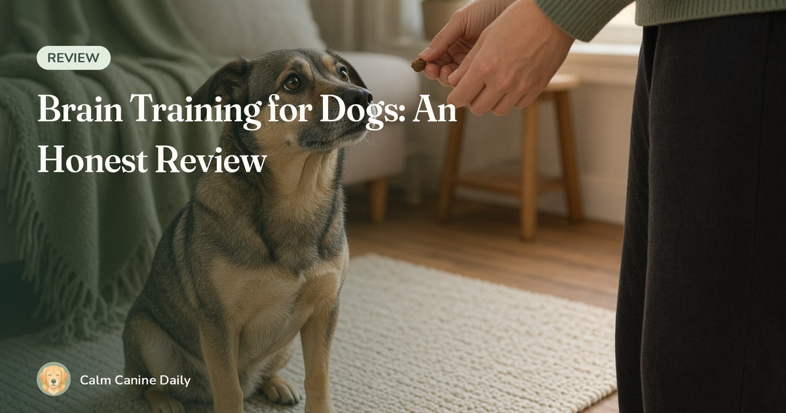

Brain Training for Dogs Review: What’s Inside, Who It Helps, and What to Watch For

This Brain Training for Dogs review is an honest, disclosed look at an online, reward-based program sold to everyday owners who want short mental games and a structured lesson path they can follow at home. It can be a reasonable option for that job. It is not a miracle, it is not a diagnosis, and it is not a substitute for a veterinarian or a qualified in-person professional when a situation is unsafe.
This review explains what the vendor says is included, who the program may suit, and what we would watch for — including the promotional tone of the sales page itself. We recommend the course as independent affiliates. If you buy through our button, we may earn a commission at no extra cost to you. We do not speak for Adrienne Farricelli or the vendor.
Educational content only. Not a guaranteed result.
About this review. Written by Calm Canine Daily in November 2026. We are independent ClickBank affiliates for this program. We are not the course creator, we have not been paid by the vendor to write a favorable review, and we do not claim veterinary or CPDT credentials. This is not a promise that the program will work for your dog. We do not invent testimonials or a house star rating.
Quick verdict
Consider it if you want a self-paced, positive-reinforcement program of short games and lessons, you can work from a browser, and you understand that you still have to do the practice. A free starter week (our checklist) is a fair way to see whether you like this style of training before you pay.
Skip it — and get in-person help — if you are dealing with a bite risk, aggression you cannot safely manage, or a panic-level problem you cannot practice fairly at home. An online course is the wrong tool there.
We do not give the program a star score. Scores on other sites are those publishers’ opinions, not facts we can verify.
In this article
- What Brain Training for Dogs is
- What the vendor says is included
- What we like
- What to watch for
- Price and guarantee
- Who it is not for
- Alternatives
- FAQ
What Brain Training for Dogs is
The official site, braintrainingfourdogs.com, describes the program as an online, self-paced course created by professional dog trainer Adrienne Farricelli. The vendor and several review publishers describe her credential as CPDT-KA. We have not independently audited that credential; we are repeating how the program is presented.
The method, as described by the vendor, is reward-based rather than punishment- or dominance-based. Training is organized like a school curriculum, from a “Preschool” level up to a level the vendor names “Einstein.” Official copy describes games such as target training, an eye-contact exercise, a “treasure hunt,” and a “jazz up and settle down” exercise — attention, sniffing, and arousal-down skills that overlap with habits in our free checklist.
The sales page uses strong marketing language (including claims about eliminating behavior problems). We do not repeat those claims as facts. Results vary. You will get out of it the practice you put in, and some dogs and households will need a different kind of help.
What the vendor says is included
The following is a summary of how the official site and independent roundups have described the bundle. Features can change; treat the live sales and member area as the authority.
According to the official site and reviews that quote it (including Canine Journal’s review and Dogster’s 2026 course roundup):
- A core path of 21 games across seven levels (three games per level, in the typical description)
- Written instructions and video demonstrations
- Extra material the vendor bundles as bonuses: behavior-training content, trick videos, a large article archive (often described as 100+ articles), case studies, and a private members’ forum
- A way to submit questions to a support team (the vendor describes this as access to Adrienne and her team; we cannot speak to response times)
- Lifetime access, as advertised by the vendor
Canine Journal also lists limitations that match what you would expect from a browser-based course: videos are not described as downloadable, an internet connection is required, there is no dedicated app, and the site experience can feel clunky. Dogster, which named the course a “Best Value” pick in its 2026 list, also noted that the sales page “seems to focus heavily on sales pitching.” We agree that the pitch is heavy. That is one reason this review stays conservative about claims.
What we like
- The method, as described, matches a force-free stance. Short mental games, attention exercises, and reward-based practice are a legitimate way to give a dog work to do at home. That is aligned with how we write about settling and check-ins.
- It is structured. A level-by-level path is easier for some owners than a pile of disconnected videos.
- It is aimed at everyday households. For owners who liked our checklist and want more structured games, this is the optional next step we mention.
- There is an advertised money-back window. Several publishers note a 60-day guarantee. Confirm the current terms at checkout.
What to watch for
- The sales page overpromises compared with how training actually works. No course “eliminates” everyday behavior problems on a schedule. We will not decorate this review with invented success stories.
- You still have to train. A video library does not sit on the mat for you.
- Browser-based delivery has limits. If you need offline downloads or a polished mobile app, this may feel dated (as Canine Journal notes).
- It is not personal coaching. A forum and a question form are not the same thing as someone in your living room watching your timing.
- We have not audited support times or production quality end to end. If you buy and the product is not what you were led to expect, follow the vendor’s advertised refund process.
Price and guarantee
Third-party reviews and course roundups have listed a one-time price of $67, with lifetime access and a 60-day money-back guarantee advertised by the vendor (for example, Canine Journal, May 16, 2023, and later 2026 roundups).
Prices and terms change. Confirm the current price, what is included, and the exact refund rules on the official checkout page before you buy. We will not lock a number into this paragraph as if it were permanent.
Who it is not for
Do not use this program — or our checklist — as a stand-in for professional help if:
- You are worried about a bite, hard guarding, or aggression you cannot safely manage
- Your dog is in sudden distress, or you suspect pain
- You cannot set up practice that is fair and safe in your home
In those cases, call a veterinarian and look for a qualified trainer or behavior professional in your area (credentials such as CPDT-KA or CBCC-KA are one useful filter, not the only one).
If you simply want a free way to start, you do not need to buy anything. Use the checklist.
Alternatives
- The free 7-Day Calm Dog Checklist — a one-week starter, not a full curriculum.
- A local, reward-based trainer — the better choice when you need eyes on your dog, or when safety is a concern.
- Other online programs. Dogster’s 2026 roundup, for example, also discusses courses such as Ian Dunbar’s work on Udemy. For a side-by-side look at Brain Training for Dogs vs SpiritDog vs Zak George, see our comparison article. This page stays on one program; that page is the three-way comparison.
FAQ
Does Brain Training for Dogs work?
Some owners like a structured set of mental games. Some will not. We will not invent a success rate. If you try it and it is not what you were promised, use the vendor’s advertised refund process and confirm the rules at checkout.
Is this an official review from the creator?
No. We are independent affiliates. The creator has not endorsed Calm Canine Daily.
Can I start with the free checklist instead?
Yes. That is what we recommend for most people who land here from a how-to article.
Will this stop barking, pulling, or jumping by itself?
No honest review can say that. Use the specific how-tos on this site, manage the environment, and treat any course as extra structure — not as a switch.
Where do I go if I want to buy?
Use the button below or the ones above. They go through our /go/brain-training.html link so we can keep disclosures and tracking clean.
Related guides
- Brain Training for Dogs vs SpiritDog vs Zak George
- Why a Tired Dog Still Won’t Settle
- How to Stop Your Dog From Barking at the Window
- How to Stop Your Dog From Jumping on Guests
- Reviews and guides
- Get the free 7-Day Calm Dog Checklist
Sources
- Official Brain Training for Dogs site — vendor description of the program, method, and advertised terms (confirm on the live checkout page).
- Canine Journal’s Brain Training for Dogs review — third-party description of what’s included and of delivery limits.
- Dogster’s 2026 online dog training course roundup — independent course comparison that discusses this program.